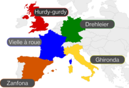

Many medieval instruments were inherited from ancient times. Medieval instruments show no development of the instrument toward a certain goal nor any structural changes. Therefore, instruments of the same type have diverse forms and have no consistent names. Instruments very similar to the hurdy-gurdy have been handed down throughout Western Europe, but their forms and names are also not standardized. It is called Vielle à roue in French, Zanfona in Spanish, Ghironda in Italian. 
Michels, U. (1989). dtv-Atlas Musik: Systematischer Teil. Musikgeschichte von den Anfängen bis zur Gegenwart (寺本まり子, Trans.; Einbändige Sonderausgabe. ed.). 白水社.